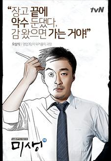

오상식 | 이성민 - 영업3팀 과장 / 43세
“장고 끝에 악수 둔댔다. 감 왔으면 가는 거야!”
일 아니면 죽음을 달라. 자투리 업무가 태반인 영업3팀의 수장.
지독한 워커홀릭. 회사 권력라인에는 전혀 관심이 없는 그는 회사의 실세인 전무와 대적하는 것도 마다않는다. 결국 잘나가던 자원1팀에서 온갖 부서의 뒤치다꺼리나 할 뿐인 영업3팀으로 좌천당했다. 모종의 사건으로 깊어진 전무와의 갈등이 여전한 긴장감으로 이어지고 있지만 그가 관심 있는 건 오직 하나, 일 뿐이다.
고작 [월급쟁이]이지만 일을 잡으면 어떻게든 되도록 만들어 가는 집념의 상사맨. 구겨진 와이셔츠, 피곤에 쩐 피부, 흐트러진 머리카락과 듬성듬성 난 턱수염, 위궤양‧식도염‧ 지방간 3종 세트는 늘 달고 다니는 이 땅의 보편타당(?)한 중년 직장인 아저씨.
이 책상 저 책상 날라 다니는 회사에서의 모습과 함께 집에선 아들 셋 끼고 소파에 널브러진 평범한 40대 가장의 모습을 대변한다. 노련한 통찰력과 승부사 기질은 타의 추종을 불허하지만 김동식 대리와 펼치는 ‘웃픈’ 쿵짝콤비플레이는 가끔 덤 앤 더머 수준이다. 본인의 뜻과 전혀 상관없이 장그래의 멘토로 자리매김 된다.